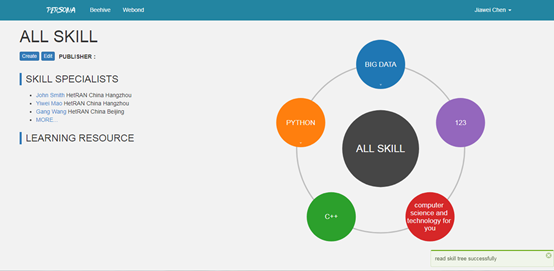
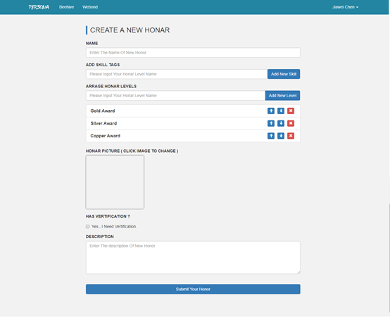
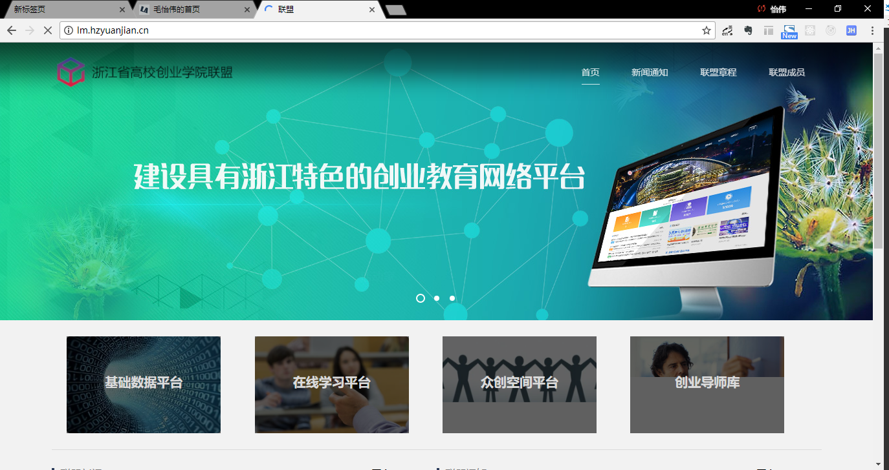

男21岁杭州本科|在校生
17816876927jsmyw95@qq.com
NOKIA内部人才技能管理平台，通过知识技能图谱，荣誉墙等方式管理企业内部员工对技能的学习。技术上主要采用采用Sails+React+Redux+D3。

面向IT专业学生的技术成长平台，通过完成实践类型的外包项目，结合大数据分析，形成人才的专业能力简历， 在提高学生技术的同时提高了企业的招聘效率。技术上采用Vue+Spring实现，涉及简单的查重算法。 作为项目负责人全程参与产品规划、开发、BP撰写、答辩，于第三届浙江省互联网+大学生创业大赛中获得银奖。
为浙江省高校创业学院联盟开发的官网，基于Gulp，Less，Pug等编码，包括信息展示与数据平台。

2017.07：浙江省第三届“互联网+”大学生创新创业大赛银奖（项目负责人）
Blog：www.maoyiwei.top
Github：https://github.com/sanmaopep